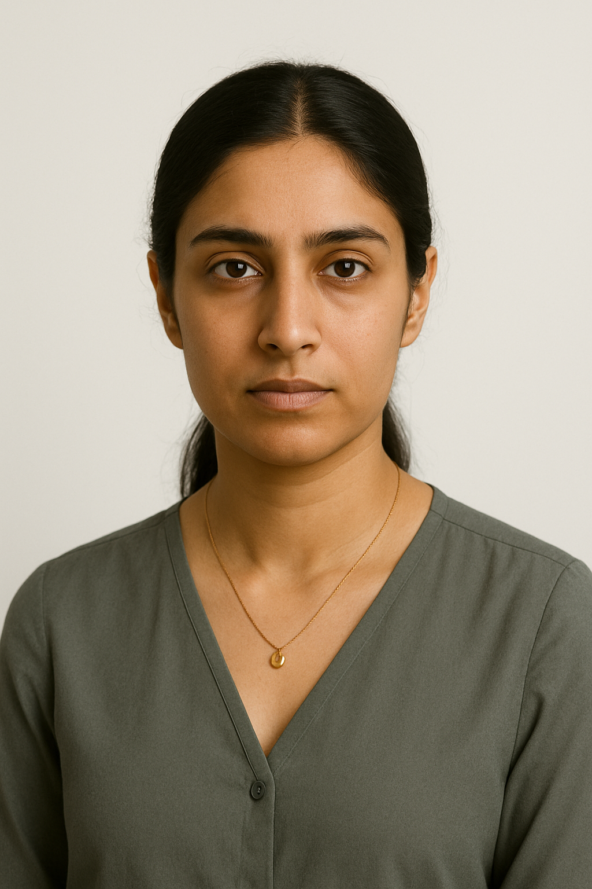
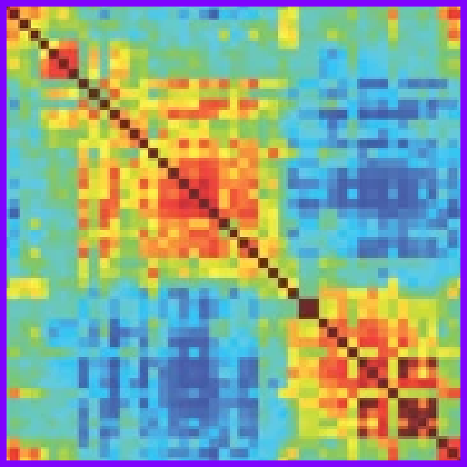
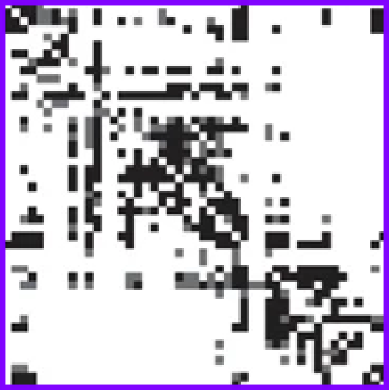

name: title layout: true class: cover --- count: false counter: false .section-mark.center[ <a href="https://www.nipreps.org/presentations/2025-esmrmb/index.html"> <object type="image/svg+xml" data="images/qr-talk-url.svg" style="width: 20%"></object> <br /> https://www.nipreps.org/presentations/2025-esmrmb/index.html </a> <br /> <br /> ## Preprocessing & pipelines Oscar Esteban <<code>nipreps@gmail.com</code>> <br /> ### ESMRMB Microstructure workshop — Marseille, Oct 8, 2025 ] ??? --- name: newsection layout: true .perma-sidebar[ <p class="rotate"> <a rel="license" href="http://creativecommons.org/licenses/by/4.0/"><img alt="Creative Commons License" style="border-width:0; height: 20px; padding-top: 6px;" src="https://i.creativecommons.org/l/by/4.0/88x31.png" /></a> <span style="padding-left: 10px; font-weight: 600;">ESMRMB Workshop — Preprocessing (Oct 8<sup>th</sup>, 2025)</span> </p> ] --- # About me .large[ **Data scientist** who plays with brain data & **open science** advocate. ] .right-column3.center[ <a href="https://www.nipreps.org/presentations/2025-esmrmb/index.html"> <object type="image/svg+xml" data="images/qr-talk-url.svg" style="width: 80%"></object> <br /> Link to slides </a> ] .pad-top.left-column3[ .people-table.larger[ | | | |---:|---| |  | **Oscar Esteban** <br /> Associate Professor & Head of [AxonLab](https://www.axonlab.org) <br /> School of Engineering <br /> HES-SO University of Applied Sciences and Arts Western Switzerland | ] * Research & Teaching FNS Fellow (2025) @ Lausanne University Hospital * PD (2020) @ Stanford University * Ph.D. (2015) @ Universidad Politécnica de Madrid <br />ESKAS (2012) @ EPFL ] --- # NiPreps: NeuroImaging PREProcessing toolS .boxed-content[ <br /> .larger.center[ "*analysis-grade*" data <i class="fa-solid fa-circle-right"></i> data **directly consumable by analyses** ] .pull-left[ <br /> <br /> *Analysis-grade* data is an analogy to the concept of "*sushi-grade (or [sashimi-grade](https://en.wikipedia.org/wiki/Sashimi)) fish*" in that both are: .large[<i class="fa-solid fa-circle-right"></i> **minimally preprocessed**,] and .large[<i class="fa-solid fa-circle-right"></i> **safe to consume** directly.] ] .pull-right.center[ <img src="https://raw.githubusercontent.com/nipreps/identity/refs/heads/main/nipreps-general/nipreps-transparent.png" width="100%" /> <a href="https://www.nipreps.org"><object type="text/xml+svg" data="https://www.nipreps.org/identity/nipreps-general/qr-code.svg" style="width: 40%"></object><br /> www.nipreps.org</a> ] ] ??? In computational neuroscience I'm recognized by my standardization efforts. NiPreps is a framework for standardized preprocessing pipelines in neuroimaging. I often use the “sushi-grade” analogy just like sushi-grade fish is minimally processed but safe to consume, NiPreps yields “analysis-grade” data, with minimal processing interventions but ready for direct machine learning ingestion. --- # NiPreps: 113 members + a robot .boxed-content.center[ <img style="width: 90%" src="https://raw.githubusercontent.com/nipreps/identity/refs/heads/main/nipreps-general/nipreps-members.png" /> ] --- counter: false .section-mark.center[ # About *us* .large.gray-text[AI-generated, fictional characters] ] ??? We can’t all introduce ourselves, so I brought six fictional colleagues who might feel familiar. If you see yourself in one of these—or a blend—you’re in the right room. --- count: false # Thảo Nguyễn (she/her) .boxed-content[ .pull-right.center[ ] .pull-left.large[ * **Role & place.** 2nd-year PhD student (computational neuroscience), Lyon. Multilingual; learning French. * **Tools.** Python, Jupyter, some Git/GitHub; limited HPC access. * **Goals.** Learn practical preprocessing, get a merged PR, build contacts. ] ] ??? Thảo Nguyễn is a 2nd year Ph.D. student in Lyon. She's very committed and loves her program, although cultural clashes have made the ride a bit bumpy at times (e.g., she's still learning French). She's coming to this workshop because it's close to Lyon and her mentor thought it would be a good opportunity to learn new things and make valuable connections in a budget. --- # Dr. Amine Bensalem (he/him) .boxed-content[ .pull-right.center[ ] .pull-left.large[ * **Role & place.** Neuroradiologist, university hospital in Marseille. * **Tools.** Vendor consoles, PACS, some MATLAB; minimal command line. * **Goals.** Trustworthy QC reports; fast, interpretable steps he can explain to colleagues. ] ] ??? --- # Sofia Rossi (she/her) .boxed-content[ .pull-right.center[ ] .pull-left.large[ * **Role & place.** RSE at an imaging core, Milan. * **Tools.** Python, containers (Docker/Singularity), CI, BIDS, SLURM. * **Goals.** Reproducible pipelines; clear governance & licensing; faster re‑runs. ] ] ??? --- # Kofi Mensah (he/him) .boxed-content[ .pull-right.center[ ] .pull-left.large[ * **Role & place.** MRI physicist postdoc, visiting scholar (Paris↔Accra). * **Tools.** Sequence design, vendor gradients, MATLAB/Python, CUDA familiarity. * **Goals.** See where acquisition choices meet preprocessing (PE polarity, eddy, Gibbs). ] ] ??? --- # Priya Shah (she/her) .boxed-content[ .pull-right.center[  ] .pull-left.large[ * **Role & place.** Data scientist (connectomics), leads a team of 10 RSEs, postdocs and undergrads. London. * **Tools.** Python, NumPy/Pandas, Nipype, stats; some R; comfortable with GitHub. * **Goals.** Quantitative QC; stable interfaces for downstream stats; containers. ] ] ??? --- # Lucas Müller (he/him) .boxed-content[ .pull-right.center[ ] .pull-left.large[ * **Role & place.** Industry R&D engineer (med‑tech imaging), Berlin. * **Tools.** Python/C++, containers, Kubernetes; thinks in ELT/MLOps patterns. * **Goals.** Low expectations: he's coming because his manager made him, perhaps he'll learn something. ] ] ??? --- <br /> .boxed-content[ <iframe src='https://wall.sli.do/event/jagJJcgjPAgM28UD1oXaAe?section=34a14fc7-37be-47c4-ba62-4221d4682ddc' style="width: 100%; height: 550px; border: 0"></iframe> ] --- counter: false .section-mark.center[ # Objectives ] ??? --- class: stepwise-svg <br /> <br /> .boxed-content.larger.no-bullet[ * .step-1.large[<i class="fa-solid fa-circle-right"></i> Connect **preprocessing** to **data flows**] * .step-2.large[<i class="fa-solid fa-circle-right"></i> Adopt a **BIDS-first foundation** for I/O] * .step-3.large[<i class="fa-solid fa-circle-right"></i> Survey what’s **available** and spot the **gaps**] * .step-4.large[<i class="fa-solid fa-circle-right"></i> Build a minimal **dMRI preprocessing workflow** together] * .step-5.large[<i class="fa-solid fa-circle-right"></i> Establish a **collaborative framework** & tooling] * .step-6.large[<i class="fa-solid fa-circle-right"></i> Strengthen **reproducibility** and **scaling**] ] --- counter: false .section-mark.center[ # Introduction ## Preprocessing & pipelines ] ??? --- # The research workflow of connectivity analyses .boxed-content[ <object type="image/svg+xml" data="../assets/neuroimaging-workflow-large.svg" style="width: 100%; padding-top: 20pt;"></object> .center[ [Esteban et al., (2020)](http://doi.org/10.1038/s41596-020-0327-3); [Niso et al., (2022)](https://doi.org/10.1016/j.neuroimage.2022.119623) ] ] ??? In broad strokes, this is the MRI-based connectivity analysis pipeline. Interestingly, it looks like any machine learning pipeline: we acquire data, perform quality control, preprocess it, define features, and then apply statistical modeling to extract insights. For a deeper dive into the details of the neuroimaging worflow, I've participated in several efforts such as the two references given below. --- count:false # The research workflow of connectivity analyses .boxed-content[ <object type="image/svg+xml" data="../assets/neuroimaging-workflow-1.svg" style="width: 100%; padding-top: 20pt;"></object> .center[ [Esteban et al., (2017)](https://doi.org/10.1371/journal.pone.0184661); [Provins et al., (2023)](https://doi.org/10.3389/fnimg.2022.1073734); <br /> [Provins et al., (2025)](https://doi.org/10.1371/journal.pbio.3003149) [Hagen et al., (2025, *accepted*)](https://doi.org/10.1101/2024.10.21.619532) ] <br /> .no-bullet[ * .larger[<i class="fa-solid fa-clipboard-list"></i> Run the **MRI experiment** following Standard Operating Procedures (SOPs)] * <i class="fa-solid fa-folder-tree"></i> .larger[**Standardized data structure** (BIDS—Brain Imaging Data Structure)] * .larger[<i class="fa-solid fa-square-check"></i> **QA/QC** (Quality assurance / control)] ] ] ??? The pipeline starts with data acquisition, management and quality assurance and control (QA/QC). My early work on QA/QC applied machine learning to automatically assess MRI images of the brain, and raised awareness over issues like “site effects”—where data from different scanners or labs can systematically vary, much like “batch effects” in genomics. One key principle in AI is that models are only as good as their data and neuroimaging is no exception. This is why my group and I have been deeply involved in BIDS, produced version-controlled, machine-readable standard operating procedures, developed comprehensive QA/QC protocols and created ready-to-use applications to detect suboptimal data early. --- count:false # The research workflow of connectivity analyses .boxed-content[ <object type="image/svg+xml" data="../assets/neuroimaging-workflow-2.svg" style="width: 100%; padding-top: 20pt;"></object> .center[ [Esteban et al., (2019)](https://doi.org/10.1038/s41592-018-0235-4); [Ciric et al., (2022)](https://doi.org/10.1038/s41592-022-01681-2); [Adebimpe et al., (2022)](https://doi.org/10.1038/s41592-022-01458-7) ] <br /> .no-bullet[ * .larger[<i class="fa-solid fa-smog"></i> Detection of **nuisance sources**] * .larger[<i class="fa-solid fa-magnifying-glass-location"></i> Spatiotemporal **location** of signals] * .larger[<i class="fa-solid fa-location-crosshairs"></i> Definition of **brain units** of analysis (regions)] ] ] ??? Next in the pipeline is preprocessing, which transforms raw data into something models can reliably interpret. For example, it identifies signals of no interest for their cleaning or accounting within modeling. In neuroimaging, preprocessing also deals with accurately locating signals and objects in space and time, and often the definition of relevant brain regions that focus the analysis. A decade ago, we might have called it “feature engineering.” Regardless of the term, it’s crucial: “preprocessing” is now a keyword in job posts at major players like Anthropic, DeepMind, and OpenAI. --- # fMRIPrep: despite minimal, a complex workflow .boxed-content.center[ <object type="image/svg+xml" data="../assets/fmriprep-natmeth-fig01-inkscape.svg" style="width: 75%;"></object> ] ??? Here I'm showing a very much simplified overview of fMRIPrep's design. Despite it being just "minimal" preprocessing and just one step of the pipeline, its complexity is evident. Rather than delving into each of these steps, I'll just say that there's a current need to update and improve computer vision algorithms and approaches (segmentation, image registration, dimensionality reduction, etc.) with AI/ML all across the dataflow. --- count:false class: stepwise-svg # fMRIPrep: despite minimal, a complex workflow .boxed-content.center[ <object type="image/svg+xml" data="../assets/fmriprep-natmeth-fig01-inkscape.svg" style="width: 75%;"></object> ] ??? --- # fMRIPrep: generalizing further .boxed-content.center[ <img src="https://github.com/oesteban/fmriprep/raw/f4c7a9804be26c912b24ef4dccba54bdd72fa1fd/docs/_static/fmriprep-21.0.0.svg" style="width: 100%; padding-top: 20pt" /> ] ??? https://www.templateflow.org/assets/templateflow_fig-birdsview.png --- # TemplateFlow: FAIR access to templates .boxed-content.center[ <img src="https://www.templateflow.org/assets/templateflow_fig-birdsview.png" style="width: 70%; padding-top: 10pt" /> ] ??? --- # The research workflow of connectivity analyses .boxed-content[ <object type="image/svg+xml" data="../assets/neuroimaging-workflow-3.svg" style="width: 100%; padding-top: 20pt;"></object> .center[ [Thompson et al., (2021, *under review*)](https://doi.org/10.1101/2021.01.16.426941); [Rodrigue et al., (2021)](https://doi.org/10.1016/j.bpsc.2020.12.002); [Li et al., (2024)](https://doi.org/10.1038/s41562-024-01942-4) ] ] .pull-right[  <br /> **Functional Connectivity (FC)** <br /> .gray-text[Synchronized BOLD co-variation between brain regions] ] .pull-left.align-right[  <br /> **Structural Connectivity (SC)** <br /> .gray-text[Tracked water diffusion pathways between brain regions] ] ??? Once data are ready for analysis, we formalize connectivity as undirected acyclic graphs, represented with symmetric matrices. In the case of structural connectivity, we use diffusion MRI to track pathways of white-matter bundles connecting brain regions. For functional connectivity we measure synchronized functional MRI signal fluctuations sensitive to the dynamic oxygen content in blood. I’ve been involved in several works applying structural and functional connectivity. For instance, in Rodrigue 2021, we explored ML approaches to identify clinical biomarkers. Unfortunately, we had to conclude that, despite promising data quality and reliability remain insufficient for robust biomarker discovery.